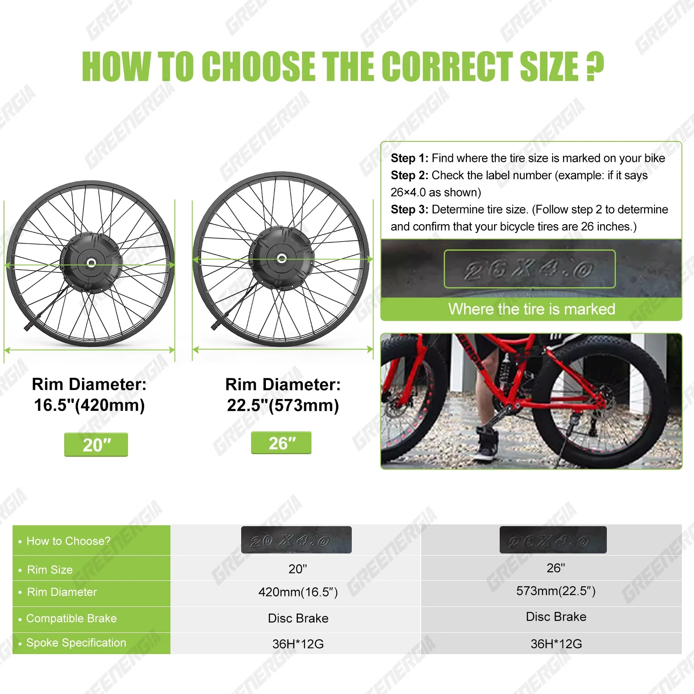
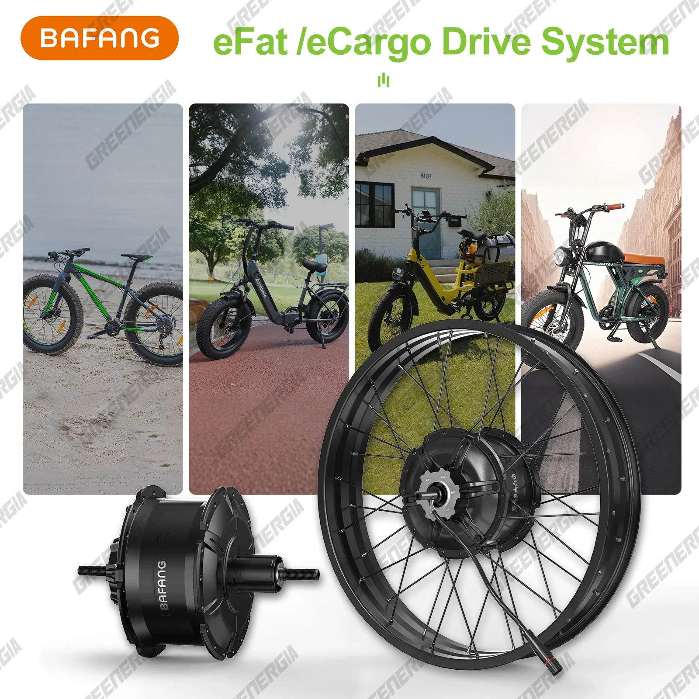
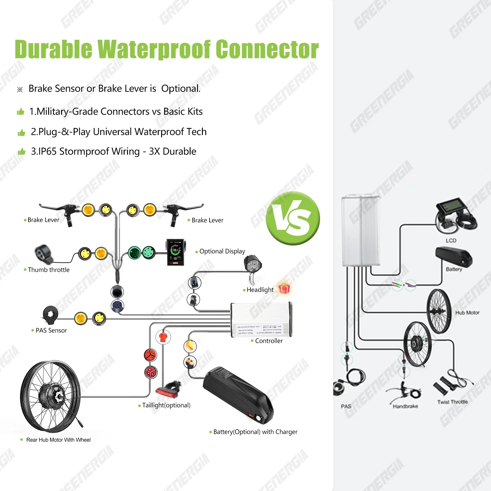
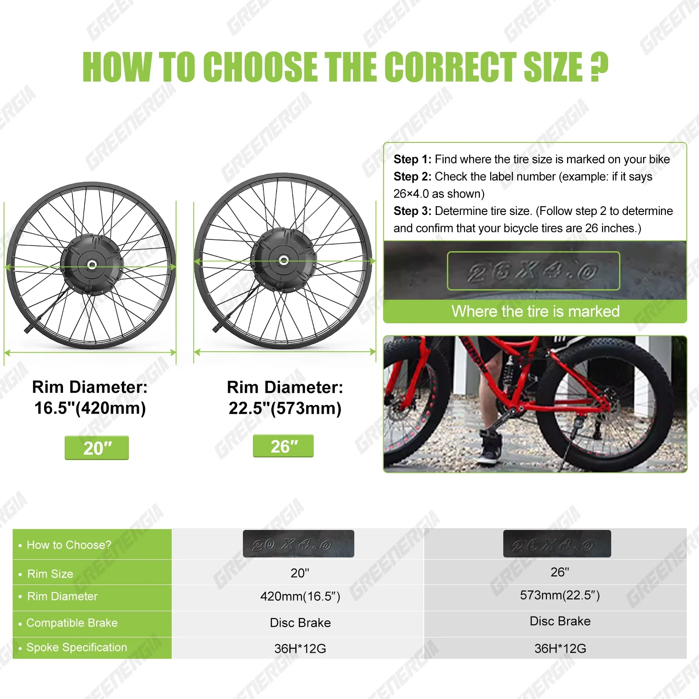
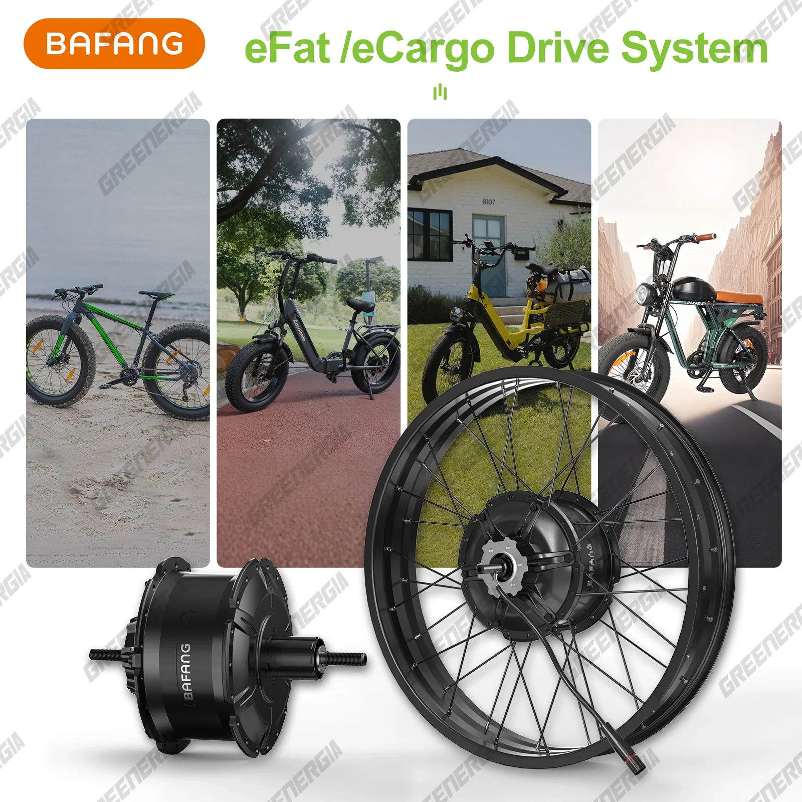
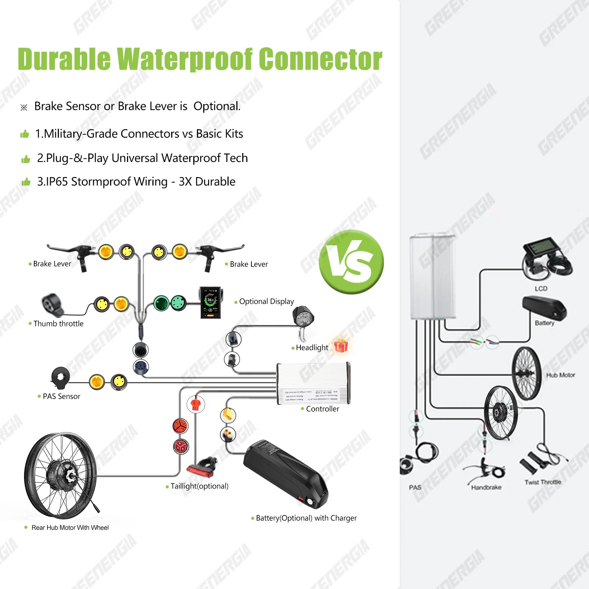

Kit de conversion pour vélo électrique BAFANG G062 48V 1000W, moteur de moyeu arrière 26" et 20" pour vélos tout-terrain sur neige
Libérez la puissance du vélo électrique avec le kit de conversion Bafang G062. Ce kit robuste est conçu pour transformer votre vélo de neige fat bike 20" ou 26" en une machine à assistance électrique performante, prête à conquérir tous les terrains.
Le cœur de ce système est son puissant moteur de moyeu arrière de 1 000 W, offrant un couple important pour des montées sans effort et une accélération fluide.
Associé à une batterie 48 V fiable, vous profiterez d'une autonomie accrue et de performances exceptionnelles à chaque sortie.- Puissant moteur de moyeu arrière de 1 000 W : Gravissez les côtes et accélérez rapidement et sans effort.
- Système de batterie 48 V performant : Augmentez votre autonomie et profitez de performances exceptionnelles.
- Compatible avec les vélos tout-terrain Snow Fat Bikes de 20 et 26 pouces : Transformez votre vélo en un véritable bolide électrique.
Le kit de conversion pour vélo électrique Bafang G062 offre un parfait équilibre entre puissance, efficacité et polyvalence. Découvrez la liberté et le plaisir du vélo électrique grâce à ce kit de conversion exceptionnel.
Le kit de conversion pour vélo électrique Bafang G062 48V 1000W est conçu pour transformer votre vélo tout-terrain de 20 ou 26 pouces en un vélo électrique puissant et performant. Ce kit complet inclut tout le nécessaire pour une conversion facile, vous permettant d'affronter les terrains difficiles avec aisance.
- Moteur puissant : Le G062 est équipé d'un moteur de moyeu arrière robuste de 1000 W, offrant un couple et une vitesse exceptionnels pour gravir les côtes et franchir les surfaces irrégulières.
- Construction durable : Conçu pour une utilisation intensive, ce kit bénéficie d'une construction durable capable de résister aux conditions les plus exigeantes.
- Système de batterie efficace : Une batterie de 48 V alimente le système, fournissant une énergie suffisante pour de longues sorties.
- Contrôle fluide et réactif : Le Bafang G062 offre des commandes intuitives pour un réglage facile de la vitesse et une puissance précise.
Le kit de conversion pour vélo électrique Bafang G062 est spécialement conçu pour les vélos tout-terrain de 20 ou 26 pouces.
- Tension : 48 V
- Puissance du moteur : 1 000 W
- Compatibilité avec les tailles de roues : 20 et 26 pouces
- Système d'entraînement : Moteur de moyeu arrière
Ce kit de conversion offre de nombreux avantages, transformant votre vélo tout-terrain en un engin polyvalent et agréable à conduire :
- Montées sans effort : Le puissant moteur de 1 000 W franchit sans effort les pentes raides, augmentant ainsi votre autonomie.
- Autonomie accrue : Grâce à son système de batterie efficace, profitez de longues sorties sans être limité par une source d'alimentation.
- Confort et commodité améliorés : Réduisez la fatigue de vos jambes et profitez de trajets plus fluides, notamment sur les terrains difficiles.
Pour utiliser efficacement le kit de conversion Bafang G062 :
- Suivez attentivement les instructions d'installation fournies pour garantir une fixation sûre et correcte.
- Chargez complètement la batterie avant chaque utilisation.
- Ajustez les réglages de vitesse selon votre confort et les conditions de conduite.
- Portez toujours un équipement de sécurité approprié, notamment un casque, lorsque vous utilisez un vélo électrique.